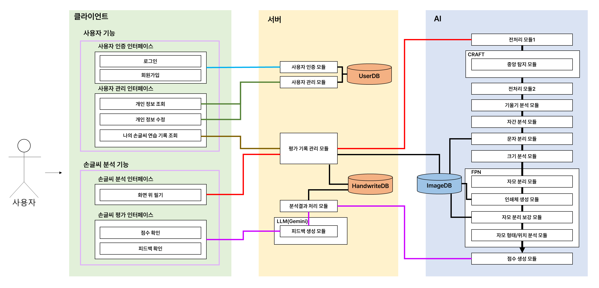
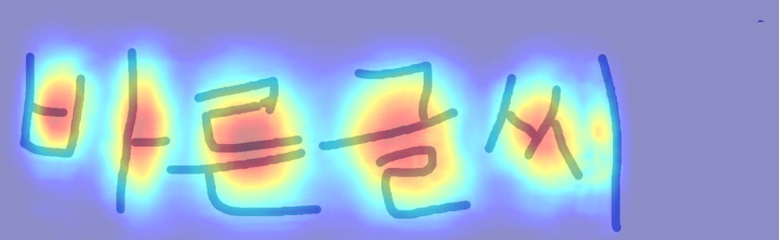
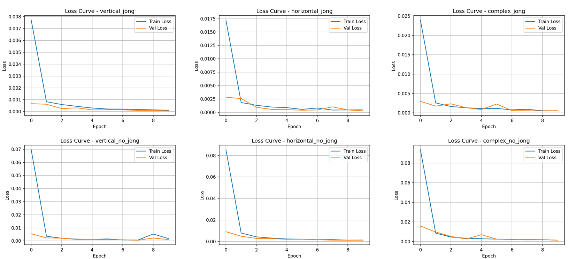
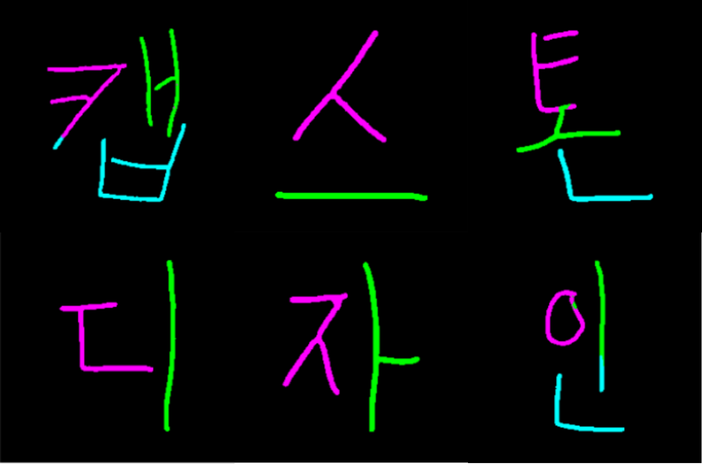
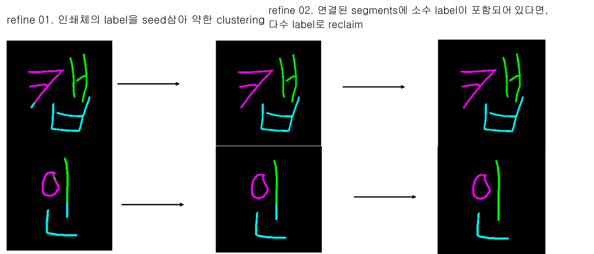

데이터셋 구축
실사용 한글 2,841자와 6개 폰트, 3종 Augmentation을 조합해 51,138개의 Label 데이터 자동 생성.
Korean Handwriting Analysis
손글씨 문장을 문자와 자소 단위로 분해하고, 형태·위치·자간·크기·기울기를 분석하여 맞춤형 교정 피드백을 제공하는 딥러닝 기반 서비스.
00 / OVERVIEW
문제 정의와 데이터 생성부터 모델 설계·학습, 후처리, Python 분석 서버 구현까지 전 과정을 직접 수행한 첫 AI 프로젝트. CRAFT의 문자 중심 확률과 기하학 알고리즘을 결합해 문자를 분리하고, FPN 모델로 초성·중성·종성을 픽셀 단위로 분석했다.
01 / PIPELINE
문장 정규화 → CRAFT 중심 추출 → Voronoi 문자 분리 → FPN 자소 Segmentation → 형태·위치 평가 → 점수 및 피드백 생성.

02 / CONTRIBUTION
데이터 설계부터 모델 학습과 서비스 연동까지 이어지는 AI 개발 범위.
실사용 한글 2,841자와 6개 폰트, 3종 Augmentation을 조합해 51,138개의 Label 데이터 자동 생성.
한글 구조를 6개 유형으로 분류하고 유형별 FPN 모델을 학습하여 초성·중성·종성 Segmentation 수행.
CRAFT 문자 중심 추출, 문장 기울기·자간 분석, Voronoi 기반 문자 분리와 연결 성분 Reclaim 후처리 구현.
전처리부터 점수 생성까지 분석 모듈을 연속 실행하고 결과 JSON과 이미지 경로를 서버에 반환하는 파이프라인 관리.
정량화된 자소 형태·위치 및 문장 분석 점수를 Gemini API에 전달하고, 사용자가 이해할 수 있는 교정 가이드로 변환하는 피드백 구조 공동 설계.
03 / RESEARCH DESIGN
일반적인 문자 인식이 아니라 손글씨의 구조적 완성도와 시각적 정렬성을 정량화하는 문제로 정의했다.
QUESTION / 01
QUESTION / 02
QUESTION / 03
04 / CRAFT DETECTION
CRAFT의 본래 단어 영역 검출 결과를 그대로 사용하지 않고, 문자 중심일 확률이 높은 픽셀의 무게중심을 각 글자의 기준점으로 사용했다.

임계치 이상의 Region Score 픽셀을 묶고 각 영역의 무게중심을 문자 중심 후보로 계산.
입력 원문의 글자 수보다 중심 후보가 많으면 인접 후보를 병합해 문자 수와 일치시킴.
중심 간 기울기와 x축 거리를 문장 기울기·자간 분석에 사용하고, 문자 영역 확장의 Seed로 전달.
05 / CHARACTER SEPARATION
CRAFT가 찾은 문자 중심에서 영역을 확장한 뒤, 잘못 잘린 획을 연결 성분 기준으로 두 차례 회수했다.
06 / SEGMENTATION
여러 해상도의 특징을 결합하는 FPN 구조로 자소를 분리하고 인쇄체 Segmentation을 기준으로 결과를 보강했다.

종성 유무 2종과 모음 형태 3종을 조합해 모델이 처리해야 할 한글 배치 복잡도를 분리했다.

‘캡스톤디자인’ 문장의 자소 분할을 시각화했다. 일부 글자의 오분류도 함께 확인하여 후처리 보강의 필요성을 도출했다.

선택한 인쇄체의 자소 Label을 Seed로 약한 클러스터링을 수행하고, 하나의 연결 성분에 섞인 소수 Label을 다수 Label로 통일하여 경계 오분류를 보강했다.
07 / REVIEW
준비된 모델과 데이터에 의존하는 단계를 넘어, 한글의 조합 원리를 데이터 설계에 반영하고 모델 입력부터 결과 보강까지 하나의 분석 시스템으로 구축했다.
합성 과정에서 일부 가로형 중성과 종성이 겹치는 문제가 남았다. 모음 분류 체계를 세분화하고 Label 중첩을 감지해 위치를 조정하는 방식이 후속 개선 과제다.
08 / STACK